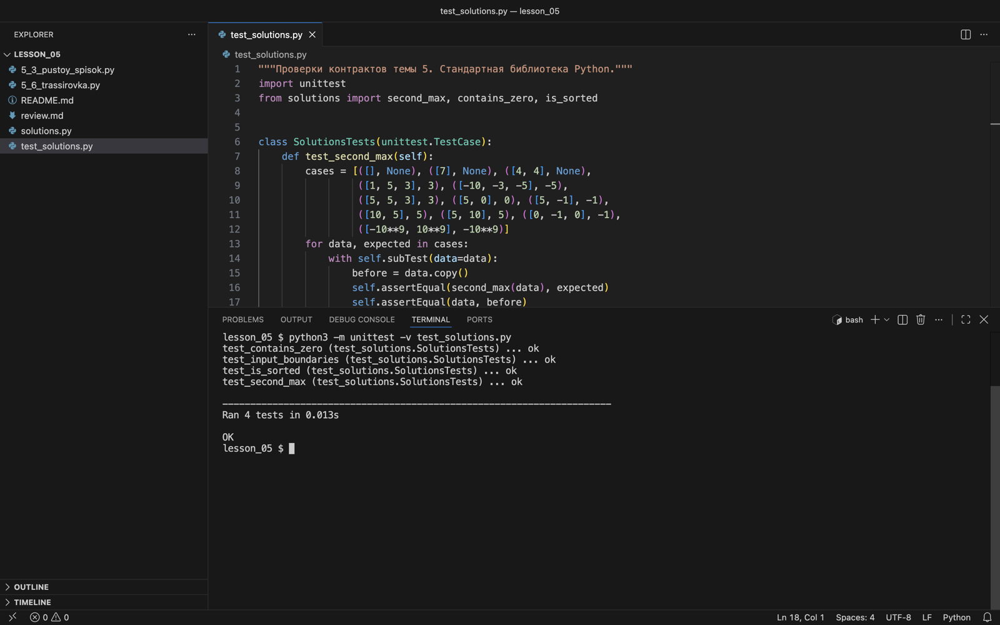

Проверка и сдача работы
Проверяем три разбора по критериям КТП и сохраняем результаты в портфолио.
Что сохранить в портфолио
Создайте в своём репозитории папку lesson_05. Положите туда исправленные функции, тесты и заполненный бланк review.md. В описании работы укажите согласованные контракты: по ним другой человек сможет проверить ответы.
lesson_05/
├── solutions.py # три исправленные функции
├── test_solutions.py
└── review.md # вопросы, тесты, инварианты, dry runВ стартовом архиве solutions.py содержит намеренно ошибочные функции. Проверочный файл уже содержит по одному примеру для каждой задачи; расширьте его до пяти случаев на задачу или больше.
python3 -m unittest -v test_solutions.pyТак выглядит запуск готовой работы, в которой все функции исправлены и тесты дополнены:
test_contains_zero (test_solutions.SolutionsTests.test_contains_zero) ... ok
test_input_boundaries (test_solutions.SolutionsTests.test_input_boundaries) ... ok
test_is_sorted (test_solutions.SolutionsTests.test_is_sorted) ... ok
test_second_max (test_solutions.SolutionsTests.test_second_max) ... ok
----------------------------------------------------------------------
Ran 4 tests in 0.001s
OKКаждая строка с ok — один тестовый метод. Итог OK внизу означает, что не упала ни одна проверка внутри методов. Если хотя бы одна проверка ложна, вместо него будет FAILED с числом ошибок.

ok и итог OK. Запуск выполнен из папки lesson_05, это видно по приглашению.В Windows, если команда python3 недоступна, используйте py -m unittest -v test_solutions.py. Запускать нужно из распакованной папки с файлами.
Проверка по КТП
| Критерий | Готово, если… | Баллы |
|---|---|---|
| Контракты | Для всех трёх задач согласованы входы, ответы и особые случаи до правки кода. | 2 |
| Тесты | У каждой задачи ≥ 5 осмысленных тестов, включая границу и отсутствие результата / нарушение свойства. | 2 |
| Контрпримеры и dry run | Для каждой ошибки есть ожидаемый и фактический ответ, таблица показывает место расхождения. | 2 |
| Инварианты | Для каждой задачи названа обработанная часть и объяснены начало, сохранение и завершение. | 2 |
| Исправления | Все три функции проходят проверки; объяснены время и память; есть файлы в портфолио. | 2 |
Всего 10 баллов. Это рубрика занятия; шкалу перевода в отметку задаёт преподаватель. Перед сдачей обменяйтесь одним новым тестом с соседней парой и объясните результат до запуска.
Пять вопросов на выход
Проверьте себя без кода
- Почему best = 0 не подходит для произвольного непустого списка целых чисел?
- Что нужно уточнить для [10, 10, 5], прежде чем искать второй максимум?
- Что именно утверждает инвариант после первых k элементов?
- Почему range(n − 1) подходит для соседних пар, но пропускает элемент при поиске нуля?
- Почему сумма может не поместиться в int32, хотя каждый элемент помещается?
Открыть разбор
- Ноль может быть больше всех элементов и не принадлежать входу.
- Нужен второй элемент по позиции или второе различное значение.
- Он описывает смысл состояния на обработанной части и должен сохраняться между итерациями.
- У пары читается i + 1; у одиночного элемента нужно дойти до индекса n − 1.
- Промежуточный результат может выйти за диапазон типа.